# install.packages("tidyverse")
# install.packages("igraph")
# install.packages("ggraph")
# install.packages("ggpubr")
# install.packages("readxl")
# install.packages("writexl")
# install.packages("RColorBrewer")
library(tidyverse)
library(tidygraph)
library(igraph)
library(ggraph)
library(ggpubr)
library(readxl)
library(Matrix)
library(RColorBrewer)Indsamling af netværksdata og konstruktion af netværksobjekter
Vigtige spørgsmål ift netværksdata
Note
Som med al anden indsamling af samfundsvidenskabelig data er det også med netværksanalyse meget vigtig at man forholder sig til en række metodologiske og videnskabsteoretiske spørgsmål, allerede i den fase, hvor man overvejer hvilken data man vil indsamle(/bruge) og hvordan man vil indsamle(/bruge) det!
I social netværksanalyse behandler vi data relationelt, dvs. vi har nogle enheder (mennesker, virksomheder, ‘ideer/begreber’, hjemmesider), som vi antager indgår i nogle relationer, som vi gerne vil strudere på en systematisk måde. Det betyder at vi på et visuelt plan hele tiden arbejder med punkter (vertices eller noder) der er forbundet (eller ikke forbundet) af streger (edges):


Det rejser nogle vigtige spørgsmål:
Hvad er en relation?
- Er det medlemskaber (som i figuren til højre, de to blå punkter er begge medlem af det røde punkt), er det venskaber/kendskaber (som i figuren til venstre de tre blå punkter kender hinanden). Er relationen samtidig? dvs. Er de to blå punkter fx. medlem af den samme klub nu(!) eller er det nok (for vores analyse) at de begge har været med på et tidspunkt, men ikke nødvendigvis samtidig? En forbindelse kan også udtrykke udveklingsrelationer. Er det fx to virksomheder der sender penge eller varer til hinanden? Eller kampagnedonationer til politikere/partier? Relationer kan også være mere abstrakte, fx. relationer mellem ideer og begreber, fx semantiske relationer eller referencer - “forfatter B” trækker på “forfatter A”s ideer osv. På mange måder mulighederne uendelige. Det vigtigste er at man er eksplicit og tydelig omkring hvad man mener man kigger på. Det har nemlig stor betydning for om man faktisk viser det man tror man viser i sine analyser. Det er også afgørende om tænker at relationen har en retning, som i eksemlet med forfatter B, der trækker på forfatter As ideer. Der kan man sige at relationen fra B til A (eller den anden vej for den sags skyld; er det det at B trækker på A, der er afgørende eller er det det at ideen flyder fra A til B der er afgørende?). Eller er relationen gensidig, når A og B er vener. Har relationerne forskellig vægt? Kender A og B fx hinanden mere eller bedre end B kender C osv.?
Hvad er et punkt?
- I skal også forholde jer til hvad enheden i analyserne er? Hvad er udgør et punkt? Og hvilke punkter skal med? Hvis vi kiggede på venskaber i en klasse, så er punkterne måske klassens elever. Men hvad hvis elev A og B ikke nævner hinanden som venner, men begge nævner X fra parallelklassen? Skal X så med? Skal hele parallelklassen med? Eller hele skolen? Og måske også naboskolen? Det er et helt afgørende spørgsmål i netværksanalyse: Hvor starter og slutter netværket?
Hvilken slags netværk er det vi kigger på?
- Som vi tidligere har talt om kan vi have både netværk mellem en enkelt type af aktører og netværk mellem flere typer af ‘aktører’. Ofte har vi måske indsamlet et netværk med to distinkte typer (et bipartite netværk), fx bestyrelsespersoner og deres virksomheder, eller forfattere og deres begreber osv. I en analytisk sammenhæng kunne vi måske være interesseret i at rette blikket mod (de formidlede) relationer mellem én netværkets enheder. Det kræver en så kaldt projektion af netværket.
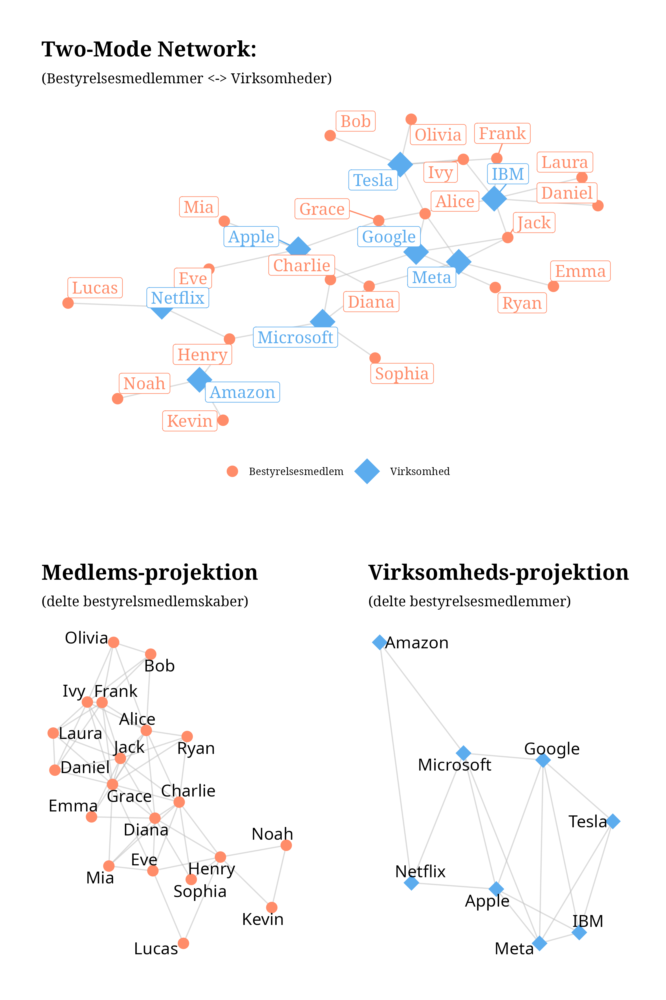
En vigtig del af en netværksanalyse er at forholde sig til spørgsmål som disse. Hvilken mekanisme er vi interesseret i at studere. Er vi optaget af en epidemologisk kortlægning af risikoen for spredning af coronavirus? Ja men, så vi nødt til at tænke relationen som en eller anden grad af fysisk kontakt. Er vi interesseret i indflydelse på beslutninger, så er relationen måske medlemskab i organer, hvor der træffes beslutninger. Er vi interesseret i popularitet og anerkendelse, så er relationen vi skal lede efter måske oplevede venskaber. Vil vi studere muligheder for innovation i virksomheder, så skal vi måske forstå relationerne som et flow af vidensdeling mellem individer eller teams.
Selvom netværksanalyse på papiret ‘bare’ er punkter og streger er det altså utrolig vigtigt at forholde sig til hvad punkterne og stregerne repræsenterer.
Kilder til Netværksdata:
Lod os kigge nærmere på hvilke typer af data I kan bruge i jeres eksamensopgaver. Der er grundlæggende tre muligheder:
- I kan bruge Danish Elite Network 2024 (Ellersgaard og Larsen m.fl), og finde et spændende subset af dette, I kan analysere
- I kan bruge CBS’ adgang til Orbis og definere og downloade et datasæt herfra.
- I kan bruge andre tilgængelige kilder eller indsamle jeres egen data (the sky is the limit!).
I det følgende skal vi se nærmere på de forskellige mulighedre:
men først indlæser vi lige de R-pakker vi får brug for (som altså skal installeres først, hvis de ikke allerede er det).
Danish Elite Network 2024 (den24)
I mappen "/data" i R projketet finder i filen danish_elitenetworks2024.csv. Den kan også downloades her, hvis I ikke allerede har den:
Indlæs data med read_csv
den <- read_csv("data/danish_elitenetworks2024.csv")den24 er et affiliation datasæt, som indeholder bestyrelsesposter og og andre medlemskaber i (stort set) alle (relevante) virksomheder, organisationer, fonde, insitutioner, råd, nævn, kommissioner osv. Dvs alt lige fra Kattens Vaern over A.P. Moeller - Maersk og Novo Nordisk til regeringens sikkerhedsudvalg osv. Hver række i datasættet repræsenterer en position, dvs. en person med en rolle i organisation:
den %>% head()# A tibble: 6 × 28
person_name person_orig_navn person_cvr_enhedsnum…¹ person_køn person_land
<chr> <chr> <dbl> <chr> <chr>
1 Thomas Peter C… Thomas Peter Ca… 4004114722 Men DK
2 Anna Emilie vo… Anna Emilie von… 4000746209 Women DK
3 Boris Christop… Boris Christoph… 4004138259 Men DK
4 Erik Christian… Erik Christian … 4003961226 Men DK
5 Morten Lund Je… Morten Lund Jen… 4009483110 Men DK
6 Bjarne Lund Jø… Bjarne Lund Jør… 4000172334 Men DK
# ℹ abbreviated name: ¹person_cvr_enhedsnummer
# ℹ 23 more variables: person_postnumber <dbl>, person_postdistrikt <chr>,
# position_rolle <chr>, position_leader <lgl>, position_start <date>,
# affiliation <chr>, affiliation_orig_name <chr>,
# affiliation_cvrnummer <dbl>, affiliation_parent <chr>,
# affiliation_beskrivelse <chr>, affiliation_sektor <chr>,
# affiliation_cvr_branche <chr>, affiliation_branchekode <chr>, …Vi kan bruge glimpse() til lige at se hvad data ellers indeholder:
den %>% glimpse()Rows: 81,429
Columns: 28
$ person_name <chr> "Thomas Peter Carlsen 46174", "Anna Emilie…
$ person_orig_navn <chr> "Thomas Peter Carlsen", "Anna Emilie von L…
$ person_cvr_enhedsnummer <dbl> 4004114722, 4000746209, 4004138259, 400396…
$ person_køn <chr> "Men", "Women", "Men", "Men", "Men", "Men"…
$ person_land <chr> "DK", "DK", "DK", "DK", "DK", "DK", "DK", …
$ person_postnumber <dbl> 8541, 1124, 2100, 2980, 5700, 6950, 6880, …
$ person_postdistrikt <chr> "Skødstrup", "København K", "København Ø",…
$ position_rolle <chr> "Bestyrelsesmedlem", "Bestyrelsesmedlem", …
$ position_leader <lgl> FALSE, FALSE, TRUE, TRUE, TRUE, FALSE, FAL…
$ position_start <date> 2012-05-11, 2022-05-20, 2022-05-20, 2022-…
$ affiliation <chr> "'ROSENHOLMFONDEN' 21165190", "'ROSENHOLMF…
$ affiliation_orig_name <chr> "'ROSENHOLMFONDEN'", "'ROSENHOLMFONDEN'", …
$ affiliation_cvrnummer <dbl> 21165190, 21165190, 21165190, 21165190, 19…
$ affiliation_parent <chr> NA, NA, NA, NA, NA, NA, NA, NA, NA, NA, NA…
$ affiliation_beskrivelse <chr> NA, NA, NA, NA, NA, NA, NA, NA, NA, NA, NA…
$ affiliation_sektor <chr> "Kultur: Teater, Museer", "Kultur: Teater,…
$ affiliation_cvr_branche <chr> "Historiske monumenter og bygninger og lig…
$ affiliation_branchekode <chr> "91.03.00", "91.03.00", "91.03.00", "91.03…
$ affiliation_branche_niveau1 <chr> "Kultur, forlystelser og sport", "Kultur, …
$ affiliation_branche_niveau2 <chr> "Biblioteker, arkiver, museer og anden kul…
$ affiliation_branche_niveau3 <chr> "Biblioteker, arkiver, museer og anden kul…
$ affiliation_branche_niveau4 <chr> "Historiske monumenter og bygninger og lig…
$ affiliation_branche_niveau5 <chr> "Historiske monumenter og bygninger og lig…
$ affiliation_tags <chr> NA, NA, NA, NA, NA, NA, NA, NA, NA, NA, NA…
$ affiliation_founding_date <date> 1998-07-09, 1998-07-09, 1998-07-09, 1998-…
$ affiliation_land <chr> "DK", "DK", "DK", "DK", "DK", "DK", "DK", …
$ affiliation_postnummer <dbl> 8543, 8543, 8543, 8543, 5700, 6950, 6950, …
$ affiliation_postdistrikt <chr> "Hornslet", "Hornslet", "Hornslet", "Horns…‘Organisationerne’ i datasættet er indelt i branchekoder affiliation_branchekode(fra cvr) som findes på forskellige aggregerings niveauer (affiliation_branche_niveau1-5) og desuden i række tags som kategoriserer organisationerne i forskellige emner og underemner. Der er desuden en variabel affiliation_sektor som inddeler data fra cvr i forskellige området, fx. virksomheder, kultur osv.
Lad os lige se hvor mange unikke virksomheder, der findes under hver branche og hver tag. Det gør vi ved at bruge distinct(affiliation, .keep_all = TRUE) som gør at den kun tager én række pr virksomhed, men (pga. .keep_all = TRUE) beholder de resterende variable i data.
den %>% distinct(affiliation, .keep_all = T) %>% count(affiliation_sektor, sort = T)# A tibble: 15 × 2
affiliation_sektor n
<chr> <int>
1 Virksomhed 3862
2 Velgørende foreninger og fonde 1788
3 <NA> 1423
4 Fagforeninger og faglige sammenslutninger 1008
5 Erhvervs- og arbejdsgiverorganisationer 909
6 Øvrige foreninger 503
7 Velfærd og omsorgsinstitutioner 406
8 Kultur: Teater, Museer 370
9 Religion 329
10 Sportsklubber 200
11 Undervisning 188
12 Medier og forlag 145
13 Universiteter og forskning 121
14 Politiske partier 48
15 Forsvar, ret og politi 16den %>% distinct(affiliation, .keep_all = T) %>% count(affiliation_branche_niveau1, sort = T)# A tibble: 21 × 2
affiliation_branche_niveau1 n
<chr> <int>
1 Andre serviceydelser 2688
2 Sundhedsvæsen og sociale foranstaltninger 2129
3 <NA> 1537
4 Liberale, videnskabelige og tekniske tjenesteydelser 1055
5 Kultur, forlystelser og sport 828
6 Pengeinstitut- og finansvirksomhed, forsikring 530
7 Landbrug, jagt, skovbrug og fiskeri 437
8 Engroshandel og detailhandel; reparation af motorkøretøjer og motorcyk… 378
9 Fast ejendom 343
10 Fremstillingsvirksomhed 307
# ℹ 11 more rowsden %>% distinct(affiliation, .keep_all = T) %>% count(affiliation_branche_niveau2, sort = T)# A tibble: 81 × 2
affiliation_branche_niveau2 n
<chr> <int>
1 Organisationer og foreninger 2681
2 Sociale foranstaltninger uden institutionsophold 1920
3 <NA> 1537
4 Hovedsæders virksomhed; virksomhedsrådgivning 577
5 Pengeinstitut- og finansieringsvirksomhed undtagen forsikring og 463
6 Plante- og husdyravl, jagt og serviceydelser i forbindelse hermed 410
7 Fast ejendom 343
8 Sport, forlystelser og fritidsaktiviteter 342
9 Kreative aktiviteter, kunst og forlystelser 304
10 Engroshandel undtagen med motorkøretøjer og motorcykler 244
# ℹ 71 more rowsden %>% distinct(affiliation, .keep_all = T) %>% count(affiliation_branche_niveau3, sort = T)# A tibble: 224 × 2
affiliation_branche_niveau3 n
<chr> <int>
1 Andre sociale foranstaltninger uden institutionsophold 1902
2 <NA> 1537
3 Erhvervs- og arbejdsgiverorganisationer samt faglige sammenslutninger 1389
4 Andre organisationer og foreninger 789
5 Fagforeninger 503
6 Kreative aktiviteter, kunst og forlystelser 304
7 Virksomhedsrådgivning 299
8 Udlejning af og virksomhed i forbindelse med egen eller leaset fast ej… 295
9 Hovedsæders virksomhed 278
10 Sport 261
# ℹ 214 more rowsden %>% distinct(affiliation, .keep_all = T) %>% count(affiliation_branche_niveau4, sort = T)# A tibble: 404 × 2
affiliation_branche_niveau4 n
<chr> <int>
1 Andre sociale foranstaltninger uden institutionsophold i.a.n. 1819
2 <NA> 1537
3 Erhvervs- og arbejdsgiverorganisationer 894
4 Fagforeninger 503
5 Faglige sammenslutninger 495
6 Andre organisationer og foreninger i.a.n. 415
7 Religiøse institutioner og foreninger 329
8 Udlejning af og virksomhed i forbindelse med egen eller leaset fast ej… 295
9 Hovedsæders virksomhed 278
10 Holdingselskabers virksomhed 216
# ℹ 394 more rowsden %>% distinct(affiliation, .keep_all = T) %>% count(affiliation_branche_niveau5, sort = T)# A tibble: 480 × 2
affiliation_branche_niveau5 n
<chr> <int>
1 Foreninger, legater og fonde med sygdomsbekæmpende, sociale og velgøre… 1787
2 <NA> 1537
3 Erhvervs- og arbejdsgiverorganisationer 894
4 Fagforeninger 503
5 Faglige sammenslutninger 495
6 Andre organisationer og foreninger i.a.n. 415
7 Religiøse institutioner og foreninger 329
8 Ikke-finansielle hovedsæders virksomhed 275
9 Ikke-finansielle holdingselskaber 195
10 Dyrkning af korn (undtagen ris), bælgfrugter og olieholdige frø 187
# ℹ 470 more rowsden %>% distinct(affiliation, .keep_all = T) %>% count(affiliation_tags, sort = T)# A tibble: 1,000 × 2
affiliation_tags n
<chr> <int>
1 <NA> 8813
2 Mødested_Netværk_VL-grupper 114
3 Ideologi_Videnskab_Naturvidenskab; Ideologi_Videnskab_Teknologi; Ideol… 58
4 Ideologi_Videnskab_Samfundsvidenskab; Ideologi_Videnskab_Universiteter… 54
5 Ideologi_Videnskab_Humaniora; Ideologi_Videnskab_Universiteter; Mødest… 49
6 Ideologi_Videnskab_Naturvidenskab; Ideologi_Videnskab_Universiteter; M… 49
7 Erhvervsliv_Fonde 40
8 Stat_Politik_Interesseorganisationer 38
9 Stat_Politik_Interesseorganisationer_Fagbevægelse 31
10 Stat_Politik_Interesseorganisationer_Civilsamfund 27
# ℹ 990 more rowsDisse branchekoder og emne-tags kan bruges til at udvælge subset af data til forskellige analyser. Det vender vi tilbage til løbende.
Orbis
En anden kilde til (netværks-)data om virksomheder er Orbis. Orbis er en database der indeholder information om virksomheder fra hele verden - omkring 400.000.000 selskaber. Databasen trækker data fra mere end 170 forskellige kilder som standardiseres og linkes på en måde der muliggør sammenlinging. På virksomhedsniveau indeholder orbis blandt meget andet geografisk data, juridisk data, finansiel data, ejerskabsdata mv. om den enkelte virksomhed. Fra et netværksperspektiv er databasen interessant fordi den desuden indeholder (aktuel og historisk) data om virksomhedernes bestyrelse og direktion (m.v.). I det følgende skal vi se hvordan man trækker et bestyrelses-(netværks-)datasæt fra orbis.
Note
Som med al anden data (særligt data man ikke selv har frembragt), skal man med Orbis være opmærksom på en række
Skim evt. denne rapport fra OECD om Orbis’ dækningsgrad. Eller tag et kig på (Heemskerk et al. 2018) om bl.a. ‘completeness’ og problemer med ‘entity resolution’ - optræder det samme firma eller den samme person flere gange med forskllige versioner af det navn. Det er ikke problemer I behøver at løse, men noget det er værd at bemærke, når man præsenterer den data man analyserer!
Orbis kan tilgås via jeres login til CBS’s bibliotek: Orbis via cbs
At ‘bygge’ et søgefilter på Orbis
Det første man skal tænke over er hvilke filtre, der er nødvendige for at hente det subset af virksomheder man er interesseret i. Der er selvfølgelig et hav af muligheder.
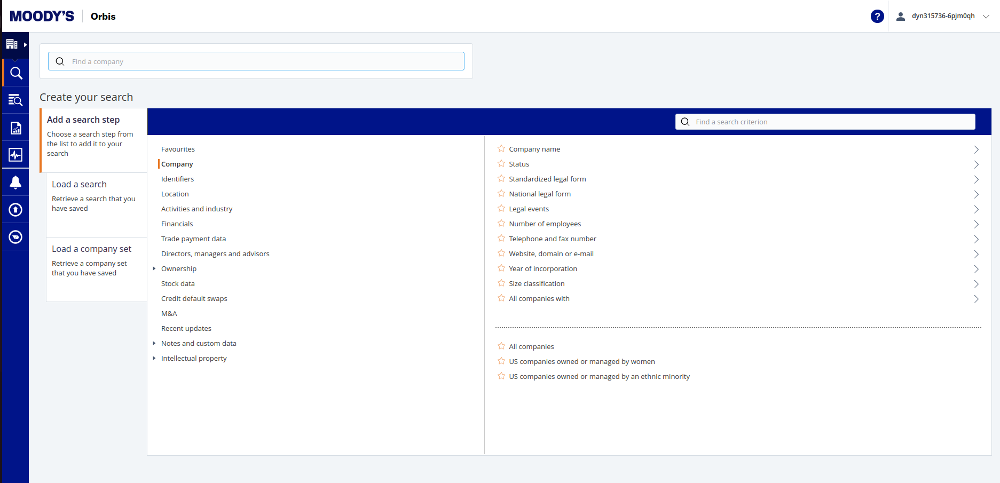
- Under Company, kan man under fx vælge Standardized legal forms vælge kun ‘Private limited companies’ eller også ‘Public limited companies’. Man kan også under Number of employees vælge kun at kigge på virksomheder af en hvis størrelse.
- Under Location kan man sætte forskellige geografiske filtre, både lande, regioner m.v., men også forskellige klassifikationer.
- Under Activities and industry kan man under Industri classifications vælge mellem forskellige branche-klassifikationer og herunder udvælge en (eller flere) bestemt(e) branche(r). Man kan desuden under Entity type afgrænse virksomhedstype yderligere. En anden mulighed er at man definerer ‘fritekst’ søgning under Activity text search, hvor man under ‘scope’ vælger hvilke datafelter, der skal søges i og under ‘Free text’ skriver hvad der skal søges efter.

Når man har ‘bygget’ sit filter kan man se hvad de forskellige filtre gør og hvad de til sammen giver af resultat. Næste skridt er View results
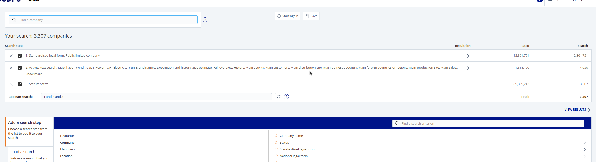
Tilføj bestyrelsesoplysninger til vores data
Her kan vi se alle de virksomheder, der lever op til vores søgekriterier. Det vi gerne vil nu er at tilføje bestyrelsesdata. Klik på Add/remove columns øverst til højre.
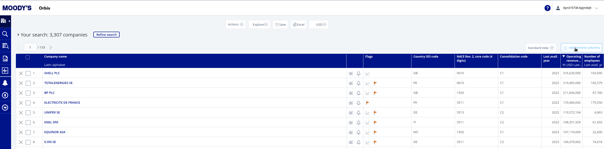
Scroller man lidt ned i venstre kolonne og klikker på feltet Directors and managers, får man i den midsterste kolonne en række valgmuligheder: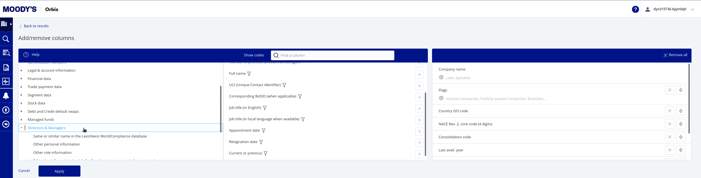
Vælg som minimum 1) Full name, 2) UCI, 3) Job title, 4) Current or previous.Under Other personal information og Other role information i venstre kolonne kan man tilføje yderligere information om personen og dennes rolle. På personniveau fx. køn og nationalitet mv. På rolleniveau kan det være nyttigt at tilføje ‘Type of role’ og ‘Board, committee or department’ og evt. ‘Level of responsibility’, da det kan give mulighed for at fokusere kun på bestyrelse og direktion.
Hvis man klikker på det lille filter-ikon under fx ‘Full name’ i den venstre kolonne får man mulighed for at filtrere på rollerne. Det kan være nyttigt her at forholde sig til om man både vil have nuværende og tidligere roller med. Har man tilføjet variablen Current or previous, kan man altid filtrere senere, men hvis man ikke gør det her skal man være opmærksom på at data kommer til at indeholde mange rækker (!)
Det er også muligt at tilføje yderligere virksomhedsdata.
Når de variable man gerne vil have med er valg, trykker man Apply og så er vi klar til at eksportere data.
Eksporter data til xlsx
Klik på “Excel”.. I den eksport-menu, der kommer op er det vigtigt, at man under Options for excel vælger ‘Repeat single item data’ inden man trykker Export.
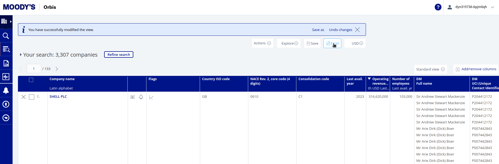
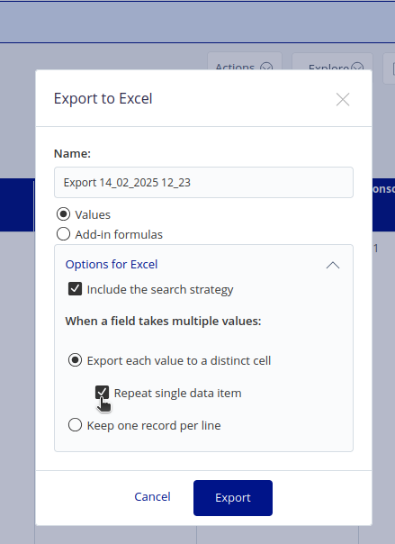
Når Orbis har klargjort data, kan man downloade filen til sin computer.
Eksempel med alkohol og tobak fra Orbis
Jeg har tidligere downloadet et datasæt med alle aktive, public limited companies med branchekoderne Alkohol og tobak (‘Manufacture of beverages’ NACE#11(-soft drinks 11.0.7) & ‘Manufacture of tobacco products’ NACE#12)
I kan downloade datasættet her: Download Data og lægge filen i data mappen i vores Rprojekt mappe. Filen kan også hentes på Canvas.
I kan downloade og indlæse et script, der indeholder en funktion skrevet specifikt til dette kursus. Det drejer sig om filen read_orbis.R. I kan downloade den her Download file og lægge den i Rprojekt mappen. Filen kan også hentes på Canvas. Når filen ligger i mappen kan vi “source” den og anvende funktionen read_orbisxlsx(), som er en genvej til at indlæse datafiler fra Orbis.
Note
Et script indlæses med funktionen source(, ...echo = FALSE), hvor echo = FALSE betyder at scriptet indlæses uden at vise indholdet.
source("functions/read_orbis.R", echo = FALSE)Nu kan vi indlæse orbis-filen tobaco_and_alcohol.xlsx ved at indsætten stien til filen (data/tobaco_and_alcohol.xlsx) i read_orbisxlsx():
df <- read_orbisxlsx(path = "data/tobaco_and_alcohol.xlsx")Orbis variable names updated:
DMFull name => name
DMUCI (Unique Contact Identifier) => person_id
Company name Latin alphabet => affiliation
Country ISO code => affiliation_country
DMJob title (in English) => role
DMBoard, committee or department => board_type
DMType of role => role_type
DMLevel of responsibility => role_level
DMAppointment date => appointment
DMResignation date => resignation
DMCurrent or previous => role_status
NACE Rev. 2, core code (4 digits) => sector
Operating revenue (Turnover) th USD Last avail. yr=> revenue
Number of employees Last avail. yr => n_employees
CSH - Orbis ID number => csh_orbis_id
CSH - Name => csh_name
CSH - Country ISO code => csh_country
GUO - Name => guo_name
GUO - Country ISO code => guo_country
DUO - Name => duo_name
DUO - Country ISO code => duo_country
New variables added:
person {TRUE/FALSE}
role_level_rec {omkodning af role_level)read_orbisxlsx funktionen oversætter bl.a. variabelnavne fra orbis til noget mere meningsfuld og læseligt. Vigtigt: Current or previous variablen hedder nu role_status. Der er også en ny variabel, person, som ud fra identifikationsnummeret ‘gætter’ om personen faktisk er en person og en variabel, role_level_rec, som er en omkodning af role_level.
Lad os til at begynde med reducere vores data (filter()) til kun aktive/current poster og poster der faktisk er personer:
df_current <- df %>%
filter(person == TRUE & role_status == "Current")En udfordring ved bestyrelsesdata fra Orbis er at det er uklart/varierende hvor mange individer, der er registreret for hver virksomhed:
df_current %>%
distinct(name, affiliation) %>%
group_by(affiliation) %>%
summarise(n = n_distinct(name)) %>%
summary(n) affiliation n
Length:5938 Min. : 1.000
Class :character 1st Qu.: 1.000
Mode :character Median : 2.000
Mean : 4.303
3rd Qu.: 4.000
Max. :1140.000 Gennemsnittet har 4 ‘directors’, der er en del en mandsbestyrelser og én virksomhed har 1140 (!) ‘directors’. Det skyldes at alle mulige lavere direktører er registreret. Vi kan prøve at løse noget af det med variablen role_level_rec, som read_orbisxlsx funktione har lavet. Den prøfer indfange meningen af en rolle fra role_level-variablen (som i Orbis hed DMLevel of responsibility) og fra role_type (som i Orbis hed DMType of role)
df_current %>% count(role_level, sort = T)# A tibble: 491 × 2
role_level n
<chr> <int>
1 Member 10438
2 Highest executive 2530
3 President / Chairman 2246
4 Representative 2158
5 Unspecified executive 991
6 Manager 879
7 Executive 685
8 Employee 634
9 Vice President / Vice Chairman 589
10 Chief Financial Officer (CFO); Financial executive 566
# ℹ 481 more rowsdf_current %>% count(role_type, sort = T)# A tibble: 196 × 2
role_type n
<chr> <int>
1 BoD 9526
2 SenMan 6862
3 OthDep 3002
4 FinAcc 1311
5 SupB 1294
6 AudC 932
7 BoD,SenMan 904
8 Sales 776
9 Oper 623
10 ExeC 621
# ℹ 186 more rowsdf_current %>% count(role_level_rec, sort = T)# A tibble: 5 × 2
role_level_rec n
<chr> <int>
1 executive 14444
2 member 11350
3 other 2714
4 chairman 2269
5 vice chairman 589Nu kan vi så subsette data, så vi kun har de ‘niveauer’ vi skal bruge. Dvs. alt undtagen ‘other’
df_current <- df_current %>%
filter(role_level_rec %in% c("member","chairman", "vice chairman","executive"))Hvor meget hjalp det? Lad os lige se hvor mange medlemmer de forskellige affilations nu har:
df_current %>%
distinct(name, affiliation) %>%
group_by(affiliation) %>%
summarise(n = n_distinct(name)) %>%
summary(n) affiliation n
Length:5927 Min. : 1.000
Class :character 1st Qu.: 1.000
Mode :character Median : 2.000
Mean : 3.921
3rd Qu.: 4.000
Max. :834.000 Der er stadig et meget højt max på 834.
Vi kan starte med lige at se på hvor mange ‘board members’ hver virksomhed har: Som I kan se er der nogle meget store ‘boards’. Det er et af problemerne med Orbis, nemlig at det er uklart hvad der er registreret per virksomhed.
df_current %>% distinct(name, affiliation) %>% count(affiliation, sort = TRUE)# A tibble: 5,927 × 2
affiliation n
<chr> <int>
1 CONSTELLATION BRANDS, INC. 834
2 BROWN FORMAN CORP 300
3 PHILIP MORRIS INTERNATIONAL INC. 187
4 MOLSON COORS BEVERAGE COMPANY 172
5 TREASURY WINE ESTATES LIMITED 110
6 JAPAN TOBACCO INC 75
7 ALTRIA GROUP, INC. 67
8 TURNING POINT BRANDS, INC. 66
9 TANZANIA BREWERIES LIMITED 53
10 SECHABA BREWERY HOLDINGS LIMITED 52
# ℹ 5,917 more rowsVi kan lave en ny variabel i vores datasæt, der for hvert individ tæller hvor mange virksomeder, de er knyttet til (altså hvor mange medlemskaber:
df_current <- df_current %>% group_by(name) %>% mutate(n_memberships = n_distinct(affiliation)) %>% ungroup()
df_current %>% ungroup() %>% count(n_memberships)# A tibble: 9 × 2
n_memberships n
<int> <int>
1 1 24333
2 2 2623
3 3 860
4 4 368
5 5 265
6 6 66
7 7 71
8 8 48
9 9 18Lad os slette personer, n = 24333, der ‘kun’ sidder i en enkelt virksomhed, da de alligevel ikke laver nogen forbindelser på tværs af virksomheder i vores netværk. Vi sletter så at sige folk i vores affiliation data, der ikke er ‘linkere’ (filter()) og samtidig sørger vi for at hvert individ kun optræder én gang per virksomhed (distinct()) - det kan jo være at nogen har mere end en rolle i samme bestyrelse (datasnavs?).
df_current <- df_current %>%
filter(n_memberships > 1) %>%
distinct(name, affiliation, .keep_all = TRUE)Hvor meget hjalp det så?
df_current %>% distinct(name, affiliation) %>% count(affiliation, sort = TRUE)# A tibble: 1,048 × 2
affiliation n
<chr> <int>
1 PHILIP MORRIS INTERNATIONAL INC. 41
2 ZAMBIAN BREWERIES PLC 38
3 PAPASTRATOS CIGARETTES MANUFACTURING COMPANY SINGLE MEMBER S.A. 37
4 TANZANIA BREWERIES LIMITED 37
5 ANHEUSER-BUSCH INBEV SA/NV 35
6 SECHABA BREWERY HOLDINGS LIMITED 30
7 KIRIN HOLDINGS COMPANY LIMITED 24
8 MERCIAN CORPORATION 24
9 MOLSON COORS BEVERAGE COMPANY 24
10 BRITISH AMERICAN TOBACCO PLC 23
# ℹ 1,038 more rowsNu har den største bestyrelse 41 medlemmer. Meget bedre!
Fra data til netværk.
Husk fra sidst Session 1 (uge 6): Introduktion til netværksanalyse i R, hvordan vi kommer fra et affiliation datasæt som vi har her, med rækker der forbinder “individer” til “organisationer”. Her er et skematisk overblik.
 R-kode til at lave ‘biadjacency matricen’ med individer i rækker og affiliations i kolonner (husk sparse!)
R-kode til at lave ‘biadjacency matricen’ med individer i rækker og affiliations i kolonner (husk sparse!)
bi_adj <- xtabs(data = df_current, formula = ~name + affiliation, sparse = TRUE)I dette eksempel vil vi gerne se hvordan virksomheder der fremstiller tobak og alkohol er forbundet gennem overlappende bestyrelser. Derfor vil gerne ‘udregne’ \(affiliation \times affiliation\) matricen ved at gange en transponeret udgave af vores biadjacency matrice med sig selv (\(B^T \times B\))
adj_c <- t(bi_adj) %*% bi_adjSom altid skal vi lige lave vores adjacency matrice om til et grafobjekt med igraph-funktionen graph_from_adjacency_matrix(). Her har vi et “undirected”, “weighted” netværk, hvor vi ser bort fra diagonalen:
gr <- graph_from_adjacency_matrix(adj_c, mode = "undirected", diag = FALSE, weighted = TRUE)Fordi vi også gerne vil kunne bruge tidyverse måden at kode på på vores netværksdata, laver graf- eller netværksdataobjektet (graf og netværk bruges i litteraturen synonymt) gr om til et tidygraph format (med as_tbl_graph())
gr <- as_tbl_graph(gr)Lad os se hvad gr indeholder:
gr# A tbl_graph: 1048 nodes and 1135 edges
#
# An undirected simple graph with 346 components
#
# Node Data: 1,048 × 1 (active)
name
<chr>
1 1919 WINES&SPIRITS PLATFORM TECHNOLOGY CO.,LTD
2 A. LE COQ AS
3 AALTO BODEGAS Y VINEDOS SA
4 AARTI BREWERIES LIMITED
5 AB MV GROUP PRODUCTION
6 ABADIA RETUERTA SA
7 ABEGOARIA WINES, S.A.
8 ABI SAB GROUP HOLDING LIMITED
9 ABIHAR PAN PRODUCTS LIMITED
10 ABINBEV EFES UKRAINE PRIVATE JSC AT
# ℹ 1,038 more rows
#
# Edge Data: 1,135 × 3
from to weight
<int> <int> <dbl>
1 1 274 1
2 2 35 3
3 2 687 2
# ℹ 1,132 more rowsSom I kan se er der to datasæt ‘inden i’ gr: - et data med noder, som lige nu har en variabel, nemlig name - et data med edges, som lige nu har tre variable, nemlig from og to som er indeks numrene på de noder der er forbundne og weight som er forbindelsens vægt (den variabel er der fordi vi har ladet netværket være vægtet). I et uvægtet netværk ville edge data kun indeholde from og to
Lad os som det første kigge på et helt minimalistisk plot af vores netværk:
gr %>% ggraph() +
geom_edge_link0() +
geom_node_point() +
theme_graph()Using "stress" as default layout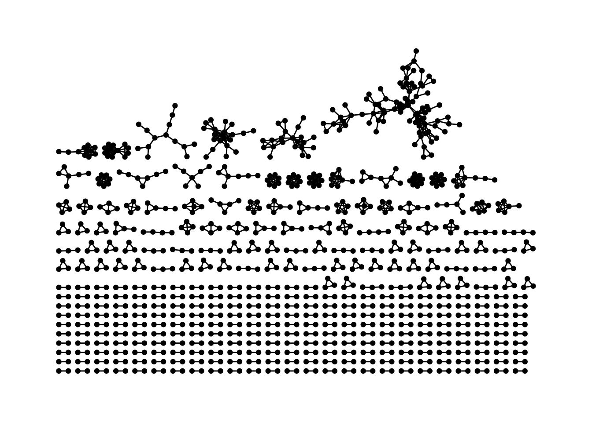
Som I kan se består netværket af flere ‘klynger’. Det kaldes i netværksanalysesprog for komponenter. Det kommer vi tilbage til i løbet af kurset, men en netværkskomponent er et sammenhængende sæt af vertices. Lad os i første omgang prøve at bruge vores branchekode-variabel til at se om vi kan finde noget logik i hvordan komponenterne ser ud. Er der komponenter, hvor der er bestyrelsesoverlap (dvs. edges) mellem virksomheder der fremstiller hhv. alkohol og tobak. Det kræver at vi får lagt vores branchekode ind i grafobjektet som en vertex attribute.
Tilføj vertice attributes
Fordi vores netværksdata objekt er et tidygraph objekt kan vi relativt ‘let’ tilføje variable til data. For at tilgå de forskellige dele af netværksobjektet bruges funktionen activate() fra tidygraph.
I vores oprindelige data har vi jo variablen sector den vil vi gerne tilføje til node-delen af netværksobjektet. Derfor skal vi aktivere node-delen: activate(nodes). Dernæst skal vi bruge left_join() som ‘joiner’ et datasæt på et andet. Vi skal ‘kun’ bruge sector og affiliation (for at kunne matche navnene) så vi bruger select(). Desuden skal vi lige sørge for at der kun er en række per affiliation / sector kombination, så den ved hvad der skal joines. Sidst men ikke mindst skal vi fortælle left_join hvilke variable der skal matches. Her name og affiliation
gr <- gr %>%
activate(nodes) %>%
left_join(df_current %>% select(affiliation, sector) %>% distinct(),
by = c("name" = "affiliation"))Hvis vi kigger på gr igen
gr# A tbl_graph: 1048 nodes and 1135 edges
#
# An undirected simple graph with 346 components
#
# Node Data: 1,048 × 2 (active)
name sector
<chr> <chr>
1 1919 WINES&SPIRITS PLATFORM TECHNOLOGY CO.,LTD 1101
2 A. LE COQ AS 1105
3 AALTO BODEGAS Y VINEDOS SA 1102
4 AARTI BREWERIES LIMITED 1102
5 AB MV GROUP PRODUCTION 1101
6 ABADIA RETUERTA SA 1102
7 ABEGOARIA WINES, S.A. 1102
8 ABI SAB GROUP HOLDING LIMITED 1105
9 ABIHAR PAN PRODUCTS LIMITED 1200
10 ABINBEV EFES UKRAINE PRIVATE JSC AT 1105
# ℹ 1,038 more rows
#
# Edge Data: 1,135 × 3
from to weight
<int> <int> <dbl>
1 1 274 1
2 2 35 3
3 2 687 2
# ℹ 1,132 more rowskan vi se at der er kommet en ny variabel på node-data delen med branchekoder.
Omkodning af branche variablen
Jeg ved at alle tobaks-underbrancherne starter med 12 og alle alkohol ditto starter med 11, så jeg først en ny variabel hvor jeg kun tager de første to ciffre af branchekoden (substr() tager en substring fra start = ? til stop = ?). Hvorefter jeg omkoder sector variablen med case_when(). I begge tilfælde skal jeg igen huske at aktivere node-delen (activate(nodes)) og bruge mutate()
gr <- gr %>%
activate(nodes) %>%
mutate(sector_2digits = substr(sector, start = 1, stop = 2))
gr <- gr %>%
activate(nodes) %>%
mutate(sector = case_when(
sector_2digits == "12"~"Tobak",
sector_2digits == "11"~"Alkohol",
.default = "Ukendt"))For at lave en simpel tabel (count()) over en variabel i node-data skal vi lige aktivere den og trække den ud som et almindeligt dataformat (med as_tibble()):
gr %>%
activate(nodes) %>%
as_tibble() %>%
count(sector, sort = T)# A tibble: 3 × 2
sector n
<chr> <int>
1 Alkohol 930
2 Tobak 117
3 Ukendt 1Visualisering med ggraph:
Lad os nu lave vores visualisering igen, hvor vi farvelægger noderne efter branche. Vi kommer senere til detaljer i plot funktionerne. Kort fortalt om visualisering:
- funktionen
ggraph()opretter et tilsyneladende tomt plot (tilsyneladende fordi den faktisk udregner et layout for vertices i vores data) - funktionen
geom_edge_link0()plotter vores edges som en ‘streg’/et link. Der er også andre muligheder fx.geom_edge_arc()der plotter dem som en bue. - funktionen
geom_node_point()der plotter vores noder som en ‘cirkel’/point.
- inden for hver af disse
geom'erkan vi sætte en masse options. Blandt andet kan vi definere nogleaesthetics. lad os bruge sector til at sætte farven på vores punkter (mapping = aes(color = sector)). Det betyder at vi lader farven på punkter følge værdierne på en bestemt variabel.
gr %>% ggraph() +
geom_edge_link0() +
geom_node_point(mapping = aes(color = sector)) +
theme_graph()Using "stress" as default layout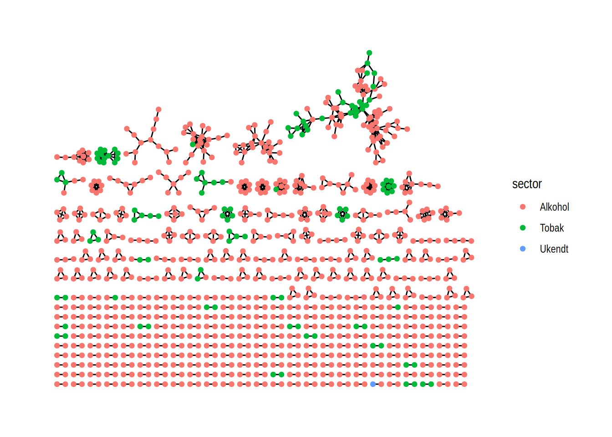
Med undtagelse af primært den største komponent ser komponenterne ud til at være ret branche homogene. Der sker noget andet i den største komponent, så lad os fokusere vores visualisering på den største komponent i netværket.
tidygraph har en funktion der hedder group_components()
# 1) først laver vi en variabel der indikerer hvilke komponenter de forskellige noder tilhører
gr <- gr %>%
activate(nodes) %>%
mutate(comp = group_components())# 2) laver et plot hvor vi først filtrer på comp == 1, som er den største.
gr %>% filter(comp == 1) %>%
ggraph() +
# 3) tilføjer edges, som vi giver en fast farve og størrelse:
geom_edge_link0(color = "gray40", edge_width = .6) +
# 4) tilføjer vertices, farvelagt efter sector og med en fast størrelse:
geom_node_point(aes(color = sector), size = 3) +
# 5) Tilføjer labels for udvalgte vertices:
geom_node_label(aes(filter = grepl("british american tobacco plc|carlsberg a/S|PHILIP MORRIS INTERNATIONAL INC|HEINEKEN N\\.|diageo p", name, ignore.case = T), label = name, color = sector), size = 3, repel = TRUE) +
# 6) Ændrer farver og labels.
scale_color_manual(values = c("salmon2", "steelblue", "grey"),
labels = c("Alkohol", "Tobak", "Ukendt")) +
# 7) Tilføjer overskrifter og navn på labels
labs(title = "'Corporate interlocks' i alkohol- og tobaksbrancherne",
subtitle = "den største komponent",
color = "Branche") +
# 8) Tilføjer et tema der er flot til netværk...
theme_graph()Using "stress" as default layout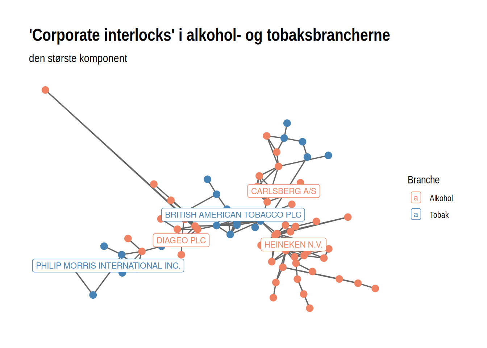
CVR
En tredje kilde til bestyrelsesnetværk er Det centrale virksomhedsregister i Danmark (https://datacvr.virk.dk/). Her kan man lave afgrænsede søgninger på danske virksomheder ud fra bl.a. geografi: Kommune eller region, virksomhedsstatus (aktive, ophørt, under konkurs etc.), virksomhedsform (aktieselskab, anpartsselskab etc.), startdato og branche.
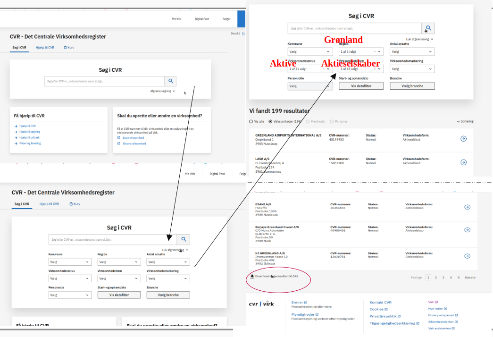
I dette eksempel har jeg valgt “Region = Grønland”, “Virksomhedsstatus = Aktive”, “Virksomhedsform = Aktieselskab”. Det giver os 199 virksomheder. Hvis man scroller ned kan man eksportere data som en xlsx fil.
download filen her
Hvis I lægger filen i datamappen under Rprojekt-mappen, kan den indlæses med read_xlsx() her
gronland_as <- read_xlsx("data/CVRudtræk_AS_Grønland_2025-02-17.xlsx")
head(gronland_as)# A tibble: 6 × 12
`CVR-nummer/REG-nummer` Startdato Ophørsdato Navn Adresse Postnr. By
<chr> <chr> <lgl> <chr> <chr> <chr> <chr>
1 12486162 2008-06-01 NA GREENLAND… Vatika… 3920 Qaqo…
2 12706952 2013-12-23 NA SIKUKI NU… Issort… 3905 Nuus…
3 12036329 2002-07-01 NA IMARTUNEQ… C/O Po… 3900 Nuuk
4 40976191 2019-10-15 NA Nuuk Wate… Imaneq… 3900 Nuuk
5 45203573 2024-11-12 NA Maniitsoq… C/O Ka… 3912 Mani…
6 12579853 2009-12-01 NA ILLIT FOR… Eqalug… 3905 Nuus…
# ℹ 5 more variables: Virksomhedsform <chr>, Hovedbranche <chr>,
# Telefonnr <chr>, Email <chr>, Reklamebeskyttet <chr>Det kræver lidt mere arbejde at komme frem til et bestyrelsesnetværk her fra. Det er nemlig kun virksomhedsdata vi får ud her. Næste skridt er at gå ind på hver virksomhed på cvr og finde bestyrelsesmedlemmerne:
Søg på CVR nummer (eller virksomhedsnavn) i søgefeltet:
Klik på “Tegningsregel, personkreds og revisor”
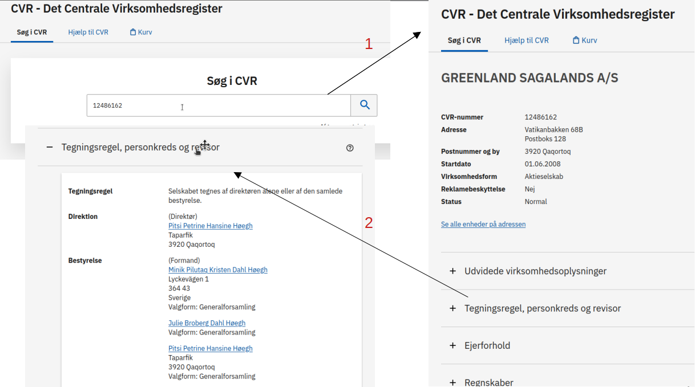
- Kopier bestyrelsen til et excel-ark:
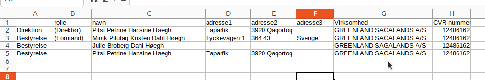
Og så fortsætter man ellers bare med alle 199 virksomheder, til man har et komplet excel ark med alle bestyrelsesmedlemmer for alle virksomheder.
Note
Det tager noget tid!! (Man kan evt. spørge øvelseslæreren om det evt. er muligt at trække data på en anden måde via fx Elitedatabasen eller direkte fra CVR!)